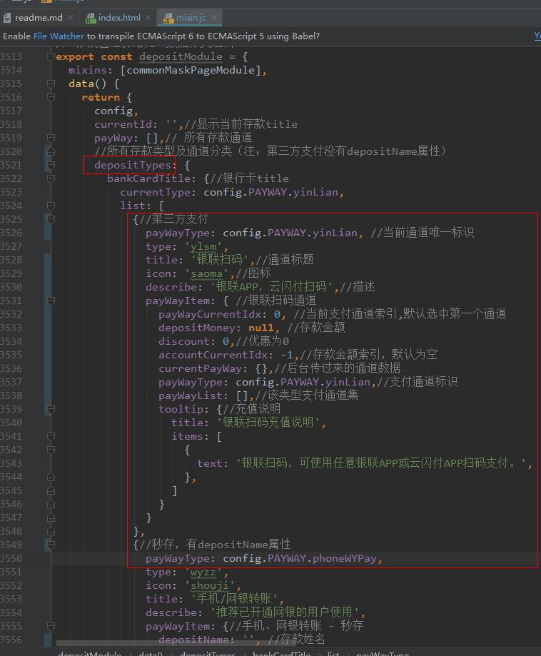
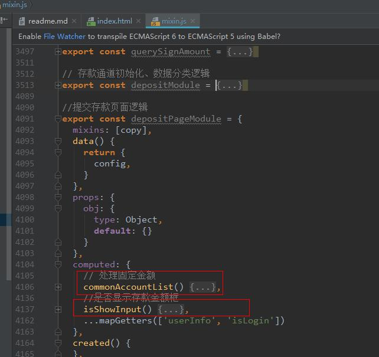
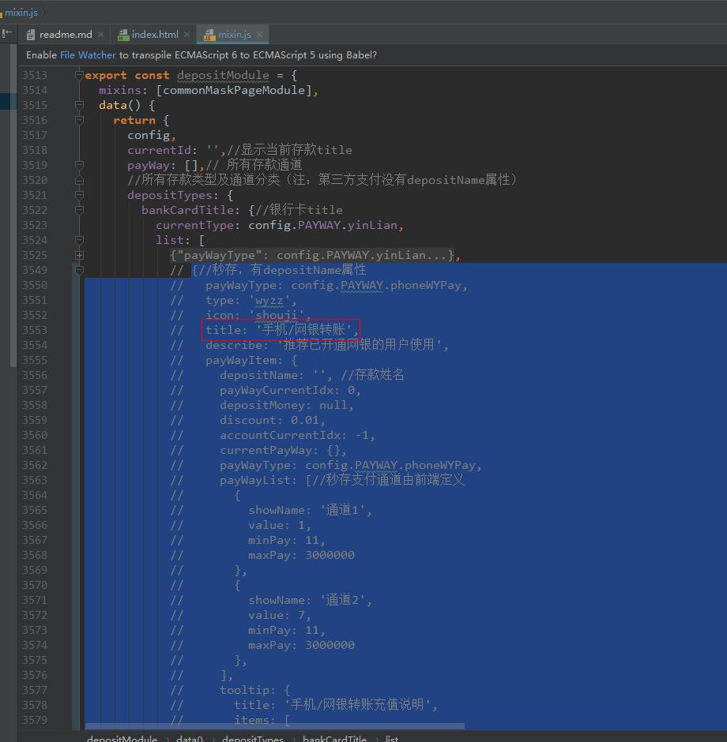

（1）pc端支付组件路径：@/pages/user/deposit
（2）手机端支付组件路径：@/pages/mobile/user/deposit
（3）业务逻辑代码js路径：@/common/js/mixin.js 下 depositModule，depositPageModule两个模块
（1）找到 depositModule 模块下 data选项下的 depositTypes对象，参考对应添加支付通道数据（代码已备注）
（2）在 @/common/js/config.js配置文件下找到 支付选项对象 PAYWAY，添加支付通道标识，如支付宝扫码为 PAYWAY.zfbSM = 1,手机网银为 PAYWAY.phoneWYPAY = '__phoneWYPay__'（注：秒存必须也要添加字符串标识，用于数据处理）
由于后台传过来的支付通道数据列表都是平级的，业务需要存款通道数据分类，所以数据分类逻辑由前端处理完成。 支付业务逻辑分两大块：
（1）获取并初始化支付通道、数据分类等逻辑处理，详情查看 depositModule 模块
如图：

（2）存款方式切换、通道切换、金额控制、提交支付等用户交互部分的逻辑处理，详情查看 depositPageModule 模块
（1）日常维护较多的是通道金额限制，一种是修改固定金额，处理方法在 depositPageModule 模块下的计算属性 commonAccountList ，另一种是限制固定金额，去掉金额输入框，处理方法在depositPageModule 模块下的计算属性 isShowInput
如图：

（2）通道开启与关闭。第三方支付通道走了接口，因此可以自动处理页面中的开启，秒存需要前端手动开关，比如我们要关闭 手机/网银转账，找到 depositTypes.bankCardTitle.list 下的 存款类型，注释即可
如图：

注：如果只是关闭或添加 手机/网银转账 下单个通道，在该存款对象的payWayList内添加或删除通道即可， 其中 value 值对应的是 banktype 字段